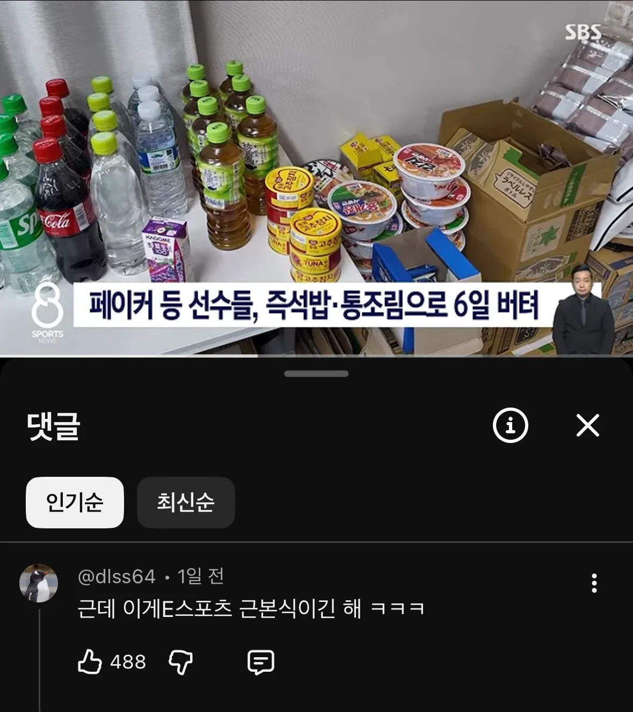

PC방 특식 ㅋㅋㅋ

PC방 특식 ㅋㅋㅋ
음습해서 ㄹㅇ 변비약 같은거 섞을거 같음 ㅋㅋ
저정도 식단이면 한달도 버틸듯
페이커도 있는데 왕뚜껑은 준비했어야지
할배 피부뒤집어졋던데 저거땜에그런가
그래도 일반참치가 아니라 고추참치네
오히려좋아
늘 먹던걸로
The usual
근데 한명 똥마려워서 없어도 그냥 개 반갈죽했던데;;
6일은 좀 빡세네
게이밍푸드
이스포츠선수한명한테직접물어봤는데 밥은잘나왔다고했음
아마 식사질이바뀌면 문제생길까바그런듯? 군면제가걸린게임이니 조금의 삑사리도내고싶지않았겠지 글고일본놈들 음흉하긴해서ㅋ
근본 게이밍 푸드라서 무난하게 버텼을 듯 ㅋㅋㅋㅋㅋ
일본 놈들이 준 음식 먹고 아카자 당할 수 있어
명색이 국가대표인데 짜계치는 해주지좀
끝나고 하이디라오로 잘해결했다고합니다
익숙한 식단 ㅋㅋㅋ
근본 ㅋㅋㅋㅋ
현지 식사했다가 탈 날까봐 일부러 그랬다는데